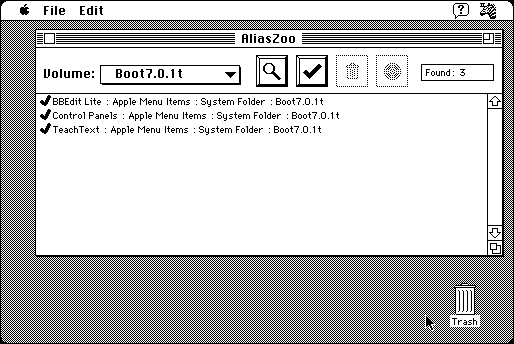

Download
alias-zoo-208.zip (229K) AliasZoo 2.0.8 repackaged into a zipped hfs disk image and checksum file. The disk image can be mounted with Mini vMac.
alias-zoo-208.hqx (311K) AliasZoo 2.0.8 in the original format.
copyright: Blue Globe Software
mod date: Mar 20, 1996
license: shareware
last known url
(gone)
A “utility for finding, testing, renaming, deleting, and repairing all the alias files on your Macintosh.” For System 7.

If you find these downloads useful, please consider helping the Gryphel Project, which hosts them.
Here are the md5 checksums for the downloads, signed with Gryphel Key 5:
--------- GRY SIGNED TEXT --------- 14899bec06b3aa3d44628fc1383c25ed alias-zoo-208.zip 1084cc075c85d9a3ab94f6a6547e527f alias-zoo-208.hqx ------- BEGIN GRY SIGNATURE ------- Gry/4Xa8CFcUzxdN/A1pBLL3uOgUBCa3s0u/T4v996LuqJc7QEdPOrSvdSyG1hil STxeX/YPMVSZgB6LLMjEd0SZ2iMs1DwfA6F6RGsyoJKRyIHBmjAMuiN/qgnNl83x BJzs1E7vWWBnK+sjgMry+tsPzaWWKWpd85g6GsXfomrdhOWgFh2GMW8I1Ud2+gZY -------- END GRY SIGNATURE --------